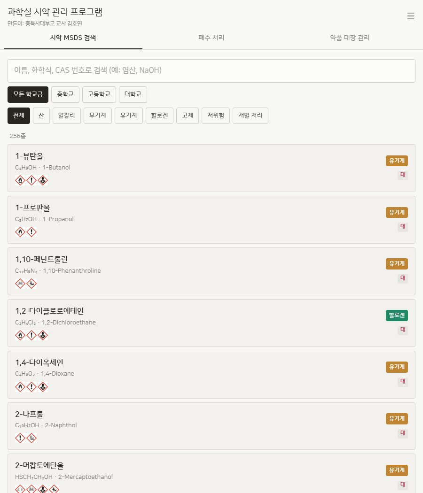
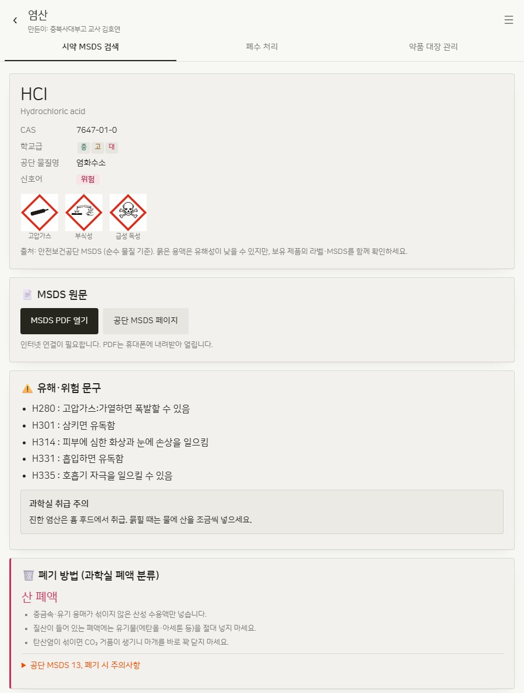
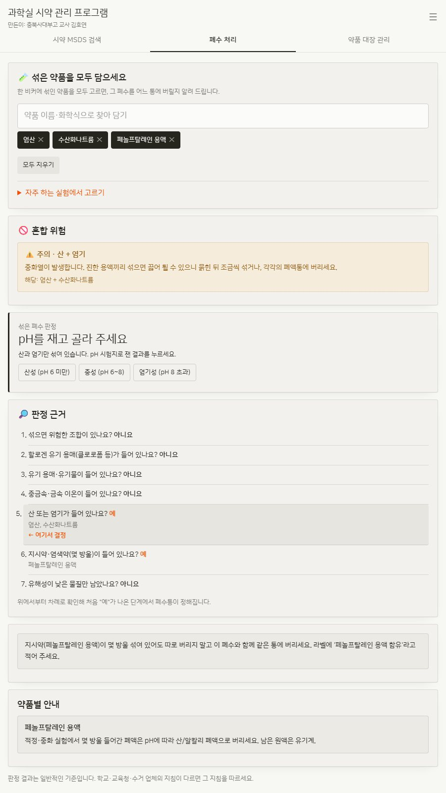
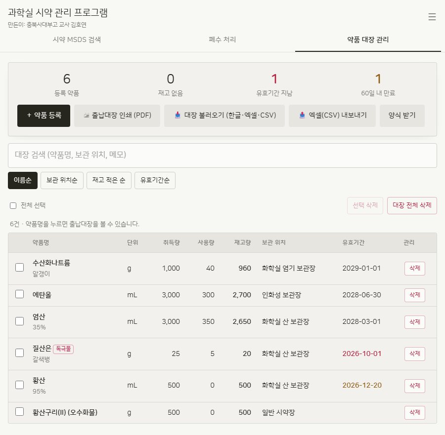
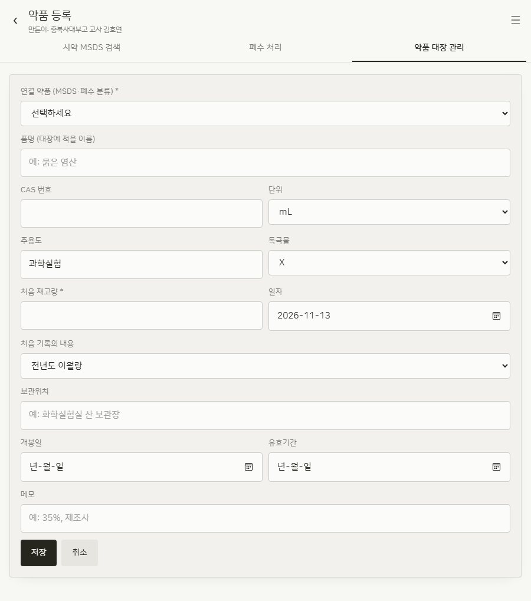
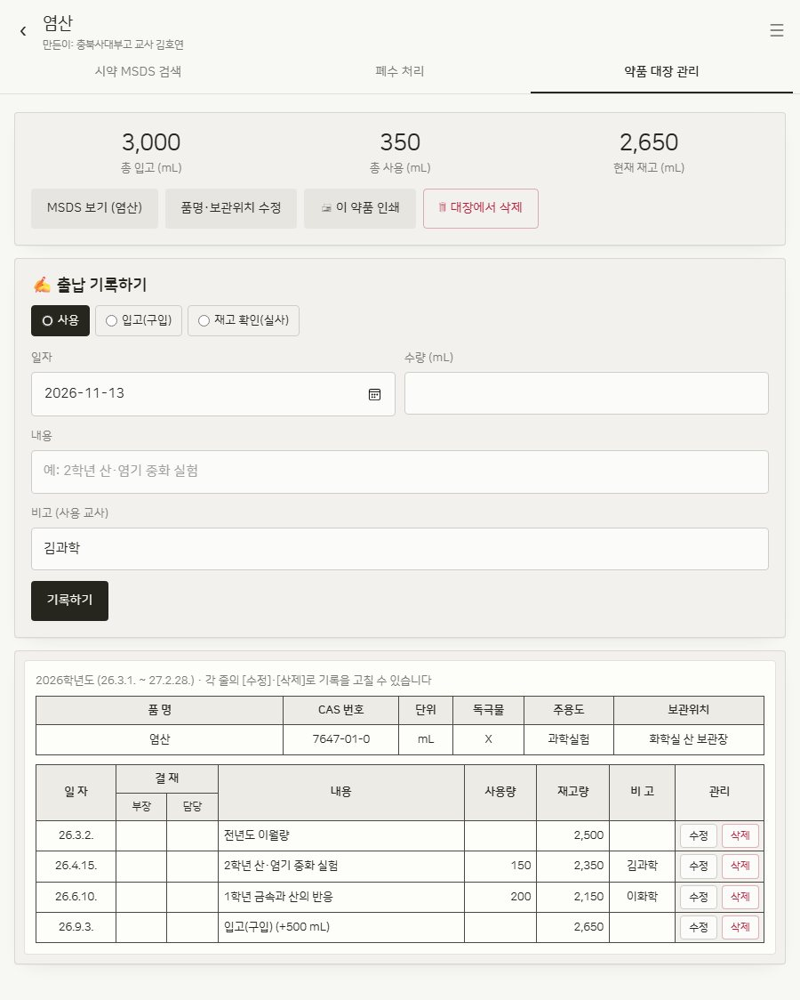
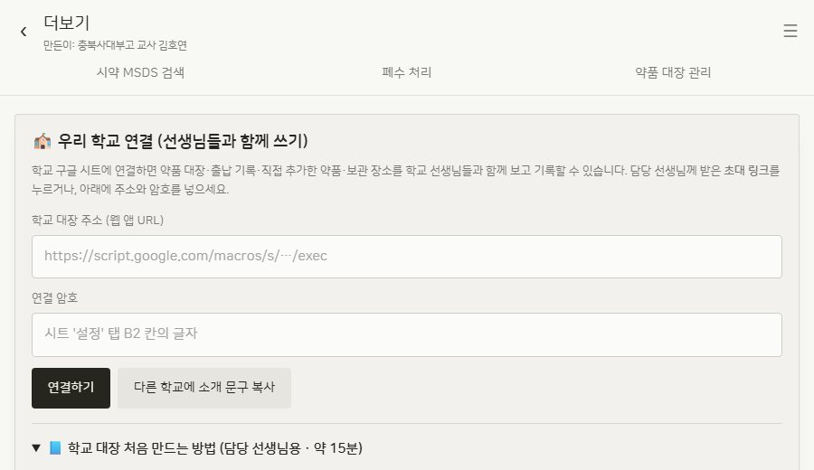

한눈에 보기
앱은 위쪽의 탭 3개와 오른쪽 위 ☰ 더보기 메뉴로 이루어져 있습니다.
시약 MSDS 검색
기본 약품 256종. 이름·화학식·CAS 번호로 찾고, GHS 그림문자·유해 문구·응급조치·보관법·MSDS 원문까지 확인.
폐수 처리
비커에 섞인 약품을 담으면 산·알칼리·무기계·유기계·할로겐·고체 중 어느 통인지와 판정 근거, 혼합 위험을 알려 줍니다.
약품 대장 관리
입고·사용·재고 실사를 기록하면 재고가 자동 계산되고, 학년도별 출납대장을 그대로 인쇄(PDF)할 수 있습니다.
시작하기 · 휴대폰에 설치하기
따로 설치 파일을 받을 필요가 없습니다. 아래 주소를 열면 바로 사용할 수 있고, 홈 화면에 추가하면 일반 앱처럼 아이콘이 생깁니다.
- 사파리로 앱 주소를 엽니다. (카카오톡 안의 브라우저가 아니라 사파리에서)
- 아래쪽 공유 버튼(네모에 위쪽 화살표)을 누릅니다.
- "홈 화면에 추가" → 추가
- 크롬으로 앱 주소를 엽니다.
- 오른쪽 위 메뉴 ⋮ 를 누릅니다.
- "홈 화면에 추가" 또는 "앱 설치"를 누릅니다.
- 앱 주소를 엽니다. 이대로 써도 됩니다.
- 주소창 오른쪽의 설치 아이콘을 누르면 바탕화면 앱처럼 따로 열 수 있어요.
- 대장 인쇄·엑셀 불러오기는 컴퓨터가 더 편합니다.
시약 MSDS 검색
실험 준비 중 "이 약품 위험한가?", "눈에 들어가면 어떻게 하지?" 싶을 때 가장 먼저 여는 화면입니다.
예: 염산, HCl, 7647-01-0, NaOH
· 학교급: 중학교 / 고등학교 / 대학교
· 폐액 분류: 산, 알칼리, 무기계, 유기계, 할로겐, 고체 …

약품 상세 화면에서 볼 수 있는 것

| 기본 정보 | 화학식, 영문명, CAS 번호, 학교급, 신호어(위험/경고), GHS 그림문자 |
| 📄 MSDS 원문 | 안전보건공단 MSDS PDF 열기와 공단 페이지 바로가기 (인터넷 필요) |
| ⚠️ 유해·위험 문구 | H 코드 문구와 과학실 취급 주의 |
| 🗑️ 폐기 방법 | 이 약품이 들어가는 폐액통과 주의사항 |
| 🚫 섞으면 안 되는 것 | 함께 두거나 섞으면 위험한 조합(빨강=위험, 노랑=주의)과 해당 약품 예시 |
| 🩹 응급조치 | 눈·피부·흡입·섭취 시 조치 |
| 🗄️ 보관 | 권장 보관 장소(산 보관장, 인화성 보관장 등) |
| 📚 MSDS 전체 항목 | 공단 MSDS 16개 항목을 펼쳐서 확인 |
폐수 처리 — 이 폐수, 어느 통에?
실험이 끝난 비커에 무엇이 섞여 있는지만 고르면, 버릴 폐액통과 그렇게 판단한 이유를 알려 줍니다. 학생들에게 직접 맡겨도 좋아요.
· 🚫 혼합 위험: 섞으면 위험한 조합이 있으면 맨 먼저 경고합니다.
· 판정: 버릴 폐액통. 산과 염기만 섞인 경우엔 pH 시험지로 잰 결과(산성/중성/염기성)를 누르면 최종 판정이 나옵니다.
· 🔎 판정 근거: 아래 7가지 질문을 위에서부터 차례로 확인해, 처음 "예"가 나온 단계에서 폐액통이 정해집니다.

- 섞으면 위험한 조합이 있나요?
- 할로겐 유기 용매(클로로폼 등)가 있나요? → 할로겐
- 유기 용매·유기물이 있나요? → 유기계
- 중금속·금속 이온이 있나요? → 무기계
- 산 또는 염기가 있나요? → pH로 산 / 알칼리
- 지시약·염색약(몇 방울)만 들어 있나요?
- 유해성이 낮은 물질만 남았나요? → 저위험
앙금·금속 조각처럼 고체가 생기면 "고체는 걸러서 따로" 안내가, 폐액통에 바로 넣으면 안 되는 약품은 별도 경고가 함께 표시됩니다.
약품 대장 관리 — 출납대장을 휴대폰으로
약품을 한 번 등록해 두면, 쓸 때마다 사용량만 적으면 됩니다. 재고량은 자동으로 계산되고, 학교 출납대장 양식 그대로 인쇄됩니다.
① 대장 첫 화면
맨 위 숫자 4개로 등록 약품 · 재고 없음 · 유효기간 지남 · 60일 내 만료를 한눈에 확인합니다. 유효기간이 지난 약품은 빨간색, 곧 만료될 약품은 주황색으로 표시돼요.
- ＋ 약품 등록새 약품을 대장에 올립니다.
- 🖨 출납대장 인쇄전체 약품의 출납대장을 PDF로 저장하거나 인쇄합니다.
- 📥 대장 불러오기기존 대장 파일(한글 hwpx · 엑셀 · CSV)을 읽어 한 번에 등록합니다.
- 📤 엑셀 내보내기현재 대장을 CSV(엑셀) 파일로 받습니다.
- 양식 받기불러오기용 빈 양식(CSV)을 받습니다.
검색창과 이름순 · 보관 위치순 · 재고 적은 순 · 유효기간순 정렬로 원하는 약품을 빨리 찾고, 체크해서 여러 개를 한 번에 지울 수도 있습니다.

② 약품 등록하기

③ 출납 기록하기 (사용 · 입고 · 재고 실사)
대장 목록에서 약품 이름을 누르면 그 약품의 출납 화면이 열립니다. 위쪽에 총 입고 · 총 사용 · 현재 재고가 보여요.
· 사용: 실험에 쓴 양
· 입고(구입): 새로 산 양
· 재고 확인(실사): 학기말 등에 실제로 남은 양을 재서 넣으면 장부를 맞춰 줍니다.

- 대장 첫 화면의 📥 대장 불러오기를 누르고 한글(hwpx)·엑셀(xlsx)·CSV 파일을 고릅니다.
- 미리보기 화면에서 각 줄이 어떤 약품과 연결됐는지 확인하고, 잘못 연결된 줄은 직접 고릅니다.
- 기존 대장에 추가할지 바꿀지 고른 뒤 불러오기를 누릅니다.
파일 형식이 맞지 않으면 양식 받기로 받은 CSV 양식에 옮겨 적은 뒤 불러오세요. 한글 파일은 .hwp가 아니라 .hwpx로 저장해야 읽을 수 있어요.
우리 학교 선생님들과 대장 함께 쓰기
기본적으로 대장은 내 기기의 브라우저에만 저장됩니다. 여러 선생님이 같은 대장에 기록하려면, 담당 선생님 한 분이 처음 한 번(약 15분) 학교용 구글 시트를 만들어 연결하면 됩니다. 기록은 각 학교의 구글 시트에 따로 저장되어 다른 학교와 섞이지 않아요.
구글 계정 · 컴퓨터 · 15분이면 됩니다. 아래 1~7단계를 따라 하세요. 앱 안에도 같은 안내와 코드 복사 버튼이 있습니다.
앱 안의 설정 안내 열기담당 선생님께 받은 초대 링크를 누르거나 초대 QR을 찍고 연결하기만 누르면 끝입니다. 구글 로그인도 필요 없어요.
- 1구글 시트 만들기
컴퓨터에서 sheets.new 를 열면 새 스프레드시트가 만들어집니다. 왼쪽 위 제목을 ○○학교 과학실 약품 대장으로 바꿉니다. (이 이름이 앱에 학교 이름으로 표시돼요) - 2Apps Script 열기
시트 위쪽 메뉴 확장 프로그램 → Apps Script 를 누르면 새 탭이 열립니다. - 3코드 붙여 넣고 저장
앱의 ☰ → 우리 학교 연결 → "학교 대장 처음 만드는 방법"에서 📋 시트 코드 복사를 누릅니다. Apps Script 편집 칸을 클릭 → Ctrl+A → Delete로 원래 내용을 지우고 → Ctrl+V 붙여 넣기 → Ctrl+S 저장. - 4처음 설정 실행
시트 탭으로 돌아와 F5(새로고침) → 메뉴 끝에 생긴 과학실 대장 → ① 처음 설정하기.
권한 요청이 나오면 [계속] → 내 계정 선택 → "Google에서 확인하지 않은 앱" 화면에서 왼쪽 아래 고급 → (프로젝트 이름)(으)로 이동 → 허용. 직접 붙여 넣은 코드라서 나오는 안내이며, 이 코드는 이 시트 안의 내용만 읽고 씁니다. ⚠ 허용한 뒤 아무 창도 안 뜨면 ① 처음 설정하기를 한 번 더 누르세요. 처음엔 권한만 받고 끝나는 경우가 많아요. "설정 완료" 창에 연결 암호가 나오고 아래쪽에설정 · 약품대장 · 출납기록 · 추가약품 · 보관장소탭이 생기면 성공입니다. 암호는 언제든 설정 탭 B2 칸에서 볼 수 있어요. - 5웹 앱으로 배포
Apps Script 오른쪽 위 파란 배포 → 새 배포 → "유형 선택" 옆 ⚙ → 웹 앱.
다음 사용자 인증 정보로 실행: 나 · 액세스 권한이 있는 사용자: 모든 사용자 → 배포.
나오는 웹 앱 URL을 복사합니다. 주소가https://script.google.com/macros/s/…/exec로 끝나야 해요. '모든 사용자'로 해도 연결 암호를 모르면 아무도 읽거나 쓸 수 없습니다. 선생님들이 구글 로그인 없이 연결하기 위한 설정이에요. - 6앱에 연결
앱 ☰ → 우리 학교 연결에서 학교 대장 주소에 웹 앱 URL, 연결 암호에 B2 칸의 암호를 넣고 연결하기. 이 기기에 이미 적어 둔 대장이 있으면 "학교 대장에 합쳐서 올리기"를 고르세요. 오른쪽 위에 초록색 ☁ 학교 이름이 보이면 연결된 것입니다. - 7선생님 초대
연결된 화면의 선생님 초대 링크 복사로 메신저에 보내거나, 초대 QR 코드를 인쇄해 과학실에 붙여 두세요. 링크·QR에는 연결 암호가 들어 있으니 우리 학교 선생님들께만 전달하세요.

- 약품 대장 · 출납 기록 · 직접 추가한 약품 · 보관 장소 이름이 학교 선생님들과 함께 공유됩니다.
- 인터넷이 끊겨도 기록은 휴대폰에 보관됐다가 연결되면 자동으로 올라갑니다. 위쪽에 "⚠ 연결 안 됨 · N건 보관 중"이 보이면 아직 안 올라간 것입니다.
- 구글 시트에서 품명·보관위치·수량 등을 직접 고쳐도 다음 동기화 때 앱에 반영됩니다. 단, 숨겨진 ID 열(A열)은 지우거나 바꾸지 마세요.
더보기 메뉴 (☰)
기본 256종에 없는 약품을 이름·화학식·CAS·폐액 분류·보관 그룹과 함께 추가합니다. 추가한 약품도 검색·폐수 처리·대장에서 똑같이 쓸 수 있어요.
"산 보관장", "인화성 보관장" 같은 보관 장소의 이름과 설명을 우리 학교 과학실에 맞게 바꿀 수 있습니다.
학교 연결을 하지 않았다면 기록은 이 기기의 브라우저에만 있습니다. 기기를 바꾸거나 브라우저 기록을 지우기 전에 백업 파일 저장을 꼭 해 두세요.
우리 학교 연결 칸의 다른 학교에 소개 문구 복사를 누르면 앱 주소와 사용법이 담긴 소개글이 복사됩니다. 메신저에 그대로 붙여 넣으세요.
자주 묻는 질문 · 문제 해결
돈이 드나요? 회원가입이 필요한가요?
무료이며 회원가입·로그인이 없습니다. 학교 공유 기능을 쓸 때만 담당 선생님의 구글 계정(개인 계정 가능)이 필요합니다.
휴대폰을 바꿨더니 대장이 사라졌어요.
학교 연결 없이 쓰면 기록은 그 기기의 브라우저에만 저장됩니다. 예전 기기에서 ☰ → 백업 파일 저장을 한 뒤 새 기기에서 백업 불러오기를 하세요. 여러 기기·여러 선생님이 쓴다면 학교 공유를 추천합니다.
"연결 암호가 맞지 않습니다"라고 나와요.
구글 시트 설정 탭 B2 칸의 글자를 대·소문자까지 그대로 넣었는지 확인하세요.
"주소 형식이 맞지 않습니다"라고 나와요.
브라우저 주소창의 시트 주소(…/edit)가 아니라, 배포할 때 나온 웹 앱 URL(…/exec)을 넣어야 합니다.
"학교 대장 주소가 올바르지 않습니다"라고 나와요.
배포할 때 액세스 권한이 모든 사용자인지 확인하세요. Apps Script의 배포 → 배포 관리 → ✏️ 에서 바꿀 수 있습니다.
"시트가 아직 설정되지 않았습니다"라고 나와요.
시트 메뉴 과학실 대장 → ① 처음 설정하기를 다시 실행하세요.
연결 암호가 밖으로 새어 나갔어요.
시트 메뉴 과학실 대장 → ② 연결 암호 바꾸기 후, 앱에서 [연결 끊기] → 새 암호로 다시 연결하고 선생님들께 새 초대 링크를 보내세요.
시트 코드를 새로 붙여 넣었는데 주소가 바뀌었어요.
코드를 고친 뒤에는 "새 배포"가 아니라 배포 → 배포 관리 → ✏️ → 버전: 새 버전 → 배포를 해야 웹 앱 주소가 그대로 유지됩니다.
다른 학교에도 시트를 쉽게 나눠 줄 수 있나요?
빈 시트 사본을 하나 만들어 공유 → 일반 액세스를 링크가 있는 모든 사용자 · 뷰어로 바꾼 뒤, 시트 주소 끝의 /edit…를 /copy로 바꾼 링크를 보내세요. 받은 학교는 [사본 만들기] 후 4단계(처음 설정 실행)부터 하면 됩니다. 기록이 담긴 원본 시트는 공유하지 마세요.
사용 시 유의사항
- 이 앱의 정보는 학교 과학실 업무를 돕기 위한 요약본입니다. 농도와 제조사에 따라 MSDS가 다를 수 있으니 반드시 보유 제품의 공식 MSDS를 함께 확인하세요.
- 그림문자·신호어·유해위험문구·16개 항목은 안전보건공단 화학물질정보(msds.kosha.or.kr)의 MSDS를 바탕으로 합니다. 공단 MSDS는 순수 물질 기준의 참고 자료이며, 법적으로 유효한 MSDS는 약품 공급자에게 받아야 합니다.
- 폐액 분류는 일반적인 기준이며, 학교·교육청·수거 업체의 지침이 우선합니다.
- 학교급(중·고·대) 구분은 참고용입니다.
사용하시다 불편한 점이나 추가했으면 하는 약품·실험이 있으면 언제든 알려 주세요.